External shuffle service: serving map files after an executor exits
component index | Shuffle block resolver | Shuffle reader
On YARN, YarnShuffleService is an optional NodeManager auxiliary service. A reducer can ask it for a byte range from the producing executor's local shuffle files even after that executor JVM exits. “External” means outside the executor, not outside the node: the service does not replicate files or survive loss of the disk that contains them. It runs no Spark tasks and does not own MapStatus entries.
Flow at a glance
- Producing executor: Registers its local shuffle directories with the NodeManager service.
- Reducing executor: Asks the service for reducer 2's block from attempt 41.
- Shuffle service: Reads the indexed byte range from local disk and sends it to the reducer.
Watch for: Registration tells the service where the files are; it does not copy them. The service can outlive the executor, but it cannot serve bytes from a lost disk.
Show the animated flow

Two distinct deployments
|
No external service |
External service enabled |
Remote fetch address in MapStatus |
Producing executor's BlockManagerId, including its block-transfer port. |
Origin executor ID and host, but the service port (default 7337). Executors on one node can advertise the same host/port without sharing an executor ID. |
| Process serving bytes |
The executor's Netty block-transfer service calls its BlockManager. |
Netty server inside the node's NodeManager JVM; it reads the origin executor's files directly. |
| Executor exits with default local storage |
Losing the serving executor normally means recomputing needed outputs. |
Executor exit alone does not invalidate otherwise accessible shuffle files. Node, disk, or service failure can still make them unavailable. |
The application setting spark.shuffle.service.enabled defaults to false. Setting it to true does not start a service. Administrators must install and configure the auxiliary service on participating NodeManagers; its configured name (normally spark_shuffle) must match the Spark setting. BlockManager.initialize chooses the advertised address and the scheduler distinguishes executor loss from file loss. Neither deployment requires a remote transfer for a block that the consumer can read locally.
Registration, then fetch
Sequence diagram · Open full sizeText equivalent
sequenceDiagram
participant N as NodeManager and YarnShuffleService
participant E as Producing executor
participant R as Reducing executor
participant D as Producer local disk
N->>N: serviceInit starts the shuffle transport server
E->>N: RegisterExecutor(appId, execId, ExecutorShuffleInfo)
N-->>E: Registration acknowledgment
E->>D: Commit shuffle data and index
Note over R: Tracker supplies origin execId, host, service port and block IDs
R->>N: FetchShuffleBlocks for one shuffle and selected map and reduce IDs
N-->>R: StreamHandle(streamId, numChunks)
R->>N: Request chunks from that stream
N->>D: Resolve index offsets and read file segment
N-->>R: Requested shuffle bytes
- Start and application scope. During
serviceInit the NM service creates an ExternalBlockHandler, optional authentication bootstrap, and a server bound to the configured port. This happens independently of Spark task launch. The AM's ExecutorRunnable supplies named application service data in the container launch context; the NM's initializeApplication handles per-application settings and authentication when enabled. This is distinct from registering the executor's file layout.
- Registration metadata. During
BlockManager.initialize, each non-driver executor synchronously sends RegisterExecutor with application ID, executor ID and ExecutorShuffleInfo (local directory roots, subdirectory count, shuffle-manager information). The handler validates the registration and acknowledges it. The service-side resolver keys this layout by (appId, execId), optionally persisting it for NM recovery and reloading it on restart. No map outputs, offsets, or rows are uploaded during registration.
- Block discovery versus block serving. The tracker worker supplies locations; the service does not answer which attempt won. The reducing executor sends
FetchShuffleBlocks(appId, execId, shuffleId, mapIds, reduceIds, batchFetchEnabled) (legacy: OpenBlocks). For shuffle 7, map ID 41, reduce ID 2, it needs no logical map slot 3. The handler creates a stream over managed buffers; the client requests chunks or streams them to disk. For each block, the Java ExternalShuffleBlockResolver combines the registered layout with the filename, looks up index offsets and returns a data-file segment. A bounded index cache stores offsets, not shuffle payloads.
Lifetime, failure, and diagnosis
With the service enabled, a normal executor's DiskBlockManager does not delete its local files on stop. YarnShuffleService.stopContainer only logs the event; stopApplication removes that application's registrations and asks the handler not to delete the directories (YARN handles directory cleanup). serviceStop closes the server, transport context, handler and state DB. Recovering the registration DB after an NM restart can restore file discovery, not recover missing file contents.
Diagnostic: An executor failing during startup with Failed to connect to external shuffle server is on the bounded registration-retry path. Compare its reported port with Started YARN shuffle service for Spark on port ... in that node's NM log. A reducer failing later with Executor is not registered (appId=..., execId=...) reached the service but lost or never had the registration for that exact pair; check NM restart/recovery and application cleanup. A registered executor with a missing index is a disk/layout problem instead. The client retries eligible transfers; if data remains unavailable the driver, not the service, schedules recomputation.